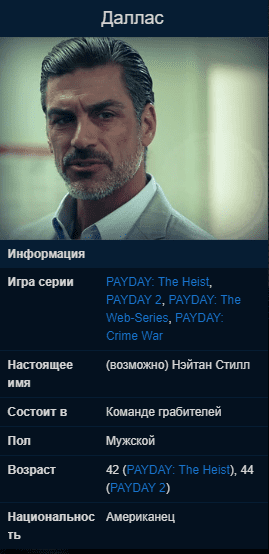

Даллас
Опытный, сообразительный, методичный. Не имеет никаких проблем с работой в команде, но не самый общительный человек. Он идеально выполнит свою часть работы и ожидает того же от остальных.
Биография

Рассудительный, спокойный и требовательный лидер команды грабителей.
Состоял в чикагской мафии, когда был молодым. Будучи там вышибалой, постепенно дорос до киллера. Когда ему было 30 лет, он попытался натравить другие мафиозные семьи друг на друга, в результате чего погибло много полицейских и бандитов. Боссы мафии заказали голову Далласа. Пока он был в бегах, ему приходилось прятаться в подземке. Также выступал против торговли наркотиками. После десяти лет в бегах, он решил раздобыть оружие и команду.
Курильщик.
Носит клоунскую маску с американским флагом.
Является старшим братом Хьюстона.
Если осветлить плакат Breaking News 2018, то можно увидеть, что на нем стоит Даллас с зонтом, это можно понять по щетине на лице стоящего.
Присутствует на похоронах Бэйна. Единственный, кто не скинул маску в могилу Бэйна (плохая концовка).
После роспуска банды PAYDAY купил большую яхту, назвал ее «Medic Bag» и путешествовал по миру. Он «болел» путешествиями, которые вовлекали его во всевозможные приключения. Иногда он встречался с другими членами банды PAYDAY, устраивая собрания и развлекая других игроков дикими рассказами о банде и их ограблениях. Одна из историй в особенности включала в себя большой красный бриллиант, который в данный момент находится в одном из узлов корабля (секретная, хорошая концовка)..
Личное дело в файлах ФБР
Вместе с персонажем в игру были добавлены:
Если это не лидер, то он определенно доверенный лейтенант. Даллас - один из первых четырех, которые появились в 2011 году. Он, кажется, является вдохновителем банды, а его спокойное поведение под огнем демонстрирует как большой опыт, так и хитрый интеллект.
Записи камер слежения показывают, что его волосы седеют, возможно, это указывает на то, что он один из старейших членов банды.
Его улыбающаяся клоунская маска с американским рисунком стала символом банды PAYDAY.